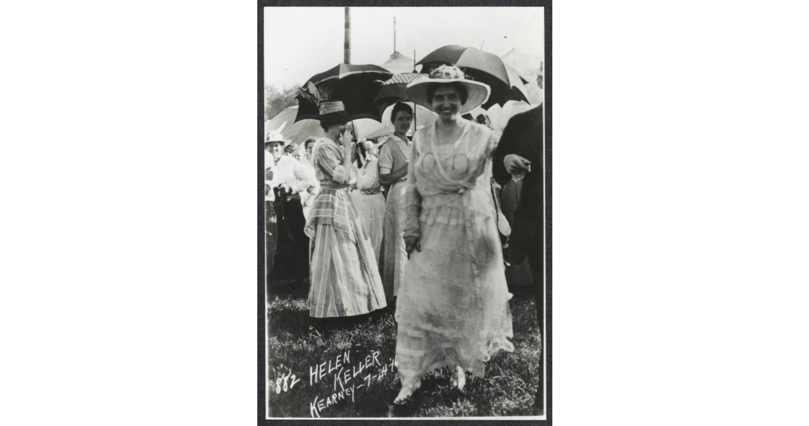

Women's Rights: The Wings of Change
The Woman's Suffrage Movement
Helen Keller resisted definition throughout her life– not only was she a
champion for
Disability Rights, but also a fervent advocate of Women’s Suffrage. Keller was an
active figure in the
Suffragist movement, delivering speeches, writing to political leaders, and
participating in suffragist
rallies.
Keller faced criticism for her beliefs on women’s suffrage, much like other
outspoken women of her time.
Critics would often dismiss her political opinions, and wrongly alleged that they
were not her own, but
those of her close acquaintances.
Despite efforts to diminish her political strength and to silence her voice, Helen
persisted in her
fearless advocacy for women’s rights.
“Today, women are asserting their rights; tomorrow, nobody will be foolhardy enough
to question them.”
From Helen Keller’s 1920 speech, "Why Woman Wants to Vote.”

Back